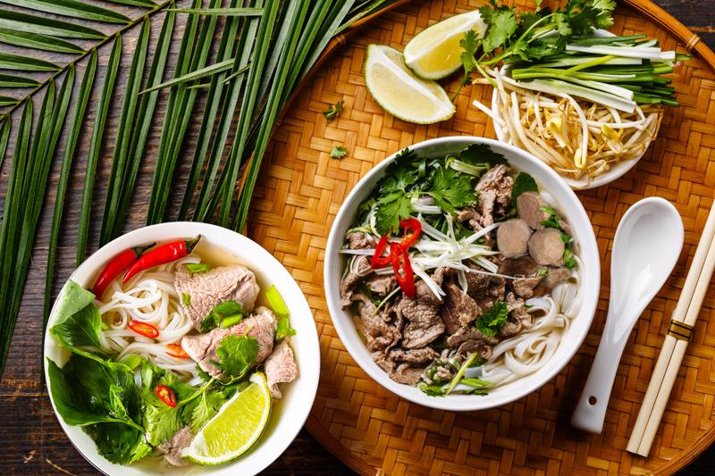

Phở
Phở là món ăn truyền thống của Việt Nam, gồm bánh phở, nước dùng và thịt bò hoặc gà.
Phở là món ăn truyền thống của Việt Nam, gồm bánh phở, nước dùng và thịt bò hoặc gà.
Bánh mì là món ăn đường phố phổ biến, kết hợp giữa ẩm thực Pháp và Việt Nam.
Gỏi cuốn là món ăn nhẹ, gồm tôm, thịt, rau sống và bún cuốn trong bánh tráng.

Bún chả là món ăn đặc trưng của Hà Nội, gồm bún, chả thịt nướng và nước mắm pha.